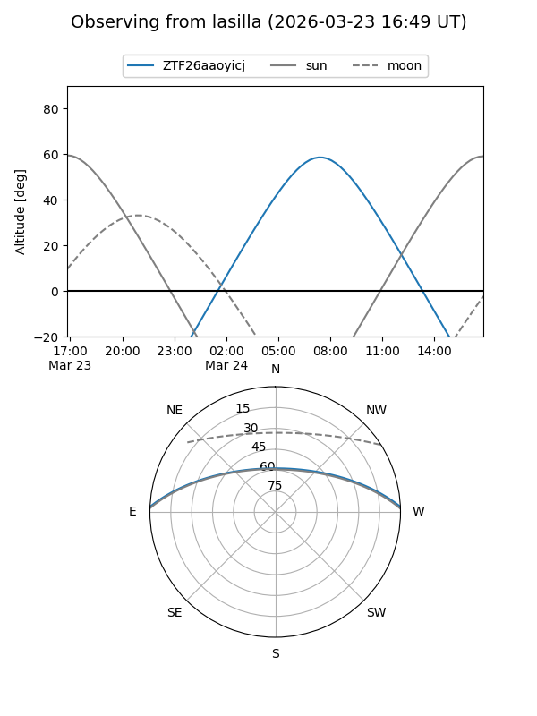
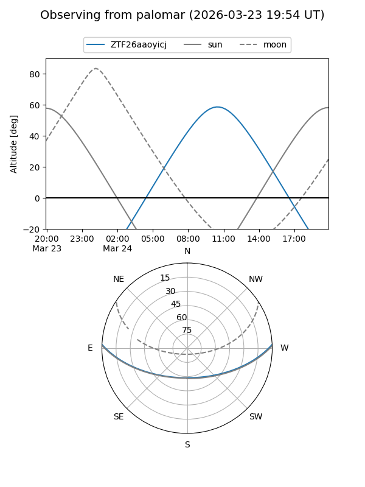

ZTF26aaoyicj
Target ZTF26aaoyicj at 2026-03-23 12:24
Aliases and brokers:
FINK: link
Lasair: link
ALeRCE: link
alt names
ZTF26aaoyicj (ztf,fink_ztf)
Coordinates:
equatorial (ra, dec) = 221.9484,+2.19735
equatorial (HMS+DMS) = 14:47:47.62,+02:11:50.45
galactic (l, b) = (356.0850,+52.62142)
Flags:
Photometry:
last ztfg=17.37
1 ztfg detections
Lightcurve
Visibility


Additional plots